ลำดับเดโม
24 หน้าตามลำดับที่ใช้นำเสนอ ในแต่ละหน้ามีปุ่มก่อนหน้าและถัดไปบนแถบด้านบน
เข้าสู่ระบบและโครงแอปหน้า 1–3
- 1
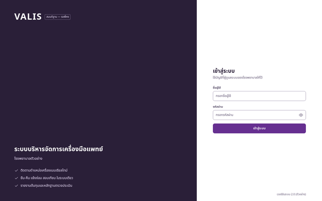
เข้าสู่ระบบ
C-01 หน้าเข้าสู่ระบบ · สถานะปกติ
หน้าเข้าสู่ระบบ VALIS จุดแรกที่ลูกค้าเห็นในเดโม
เปิดหน้า 1 - 2
โครงแอปและเมนู
C-03 โครงแอป: แถบเมนูข้าง + แถบบน · สถานะปกติ
โครงแอปหลัก เมนูซ้ายแบ่ง 6 กลุ่ม ใช้กับทุกหน้า
เปิดหน้า 2 - 3
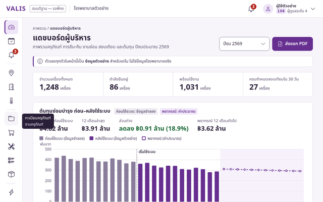
เมนูไอคอน จอ 1024
C-03 โครงแอป: แถบเมนูข้าง + แถบบน · สถานะปกติ · ดูที่จอ 1024
จอ 1024 (iPad แนวนอน) เมนูย่อเหลือไอคอน ชี้แล้วขึ้นชื่อ
เปิดหน้า 3
แดชบอร์ดผู้บริหารและต้นทุนหน้า 4–6
- 4
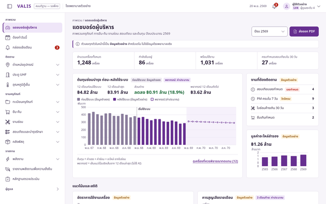
แดชบอร์ดผู้บริหาร + ต้นทุน
09-1 แดชบอร์ดผู้บริหาร (หน้าเดียว) + ส่วนต้นทุนก่อน–หลัง และพยากรณ์ปีหน้า · สถานะปกติ
แดชบอร์ดผู้บริหาร มีส่วนต้นทุนซ่อมก่อน–หลังใช้ระบบและพยากรณ์ เป็นจุดขายหลักของเดโม
เปิดหน้า 4 - 5
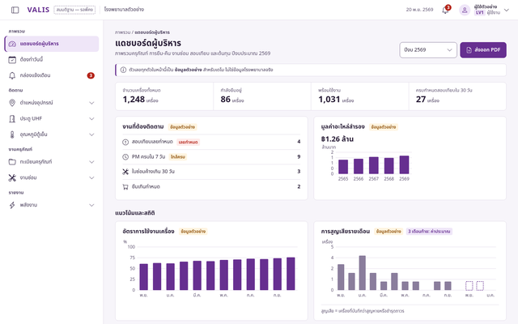
แดชบอร์ดของผู้ใช้ LV1
09-1 แดชบอร์ดผู้บริหาร (หน้าเดียว) + ส่วนต้นทุนก่อน–หลัง และพยากรณ์ปีหน้า · สถานะผู้ใช้ LV1 (ไม่เห็นต้นทุน)
แดชบอร์ดเดียวกันเมื่อผู้ใช้สิทธิ์ต่ำเข้า ส่วนต้นทุนถูกซ่อน
เปิดหน้า 5 - 6
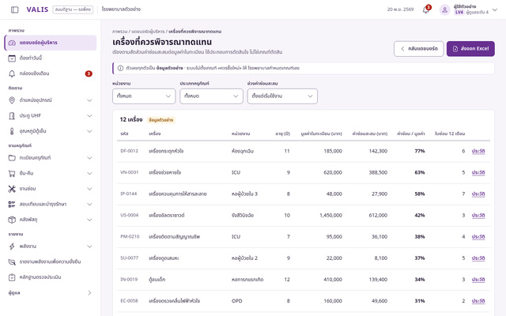
เครื่องที่ควรทดแทน
09-3 เครื่องที่ควรพิจารณาทดแทน (drill-down) · สถานะปกติ
รายการเครื่องที่ควรพิจารณาทดแทน เรียงตามค่าซ่อมสะสมเทียบมูลค่า
เปิดหน้า 6
สอบเทียบ PM และ HAหน้า 7–9
- 7
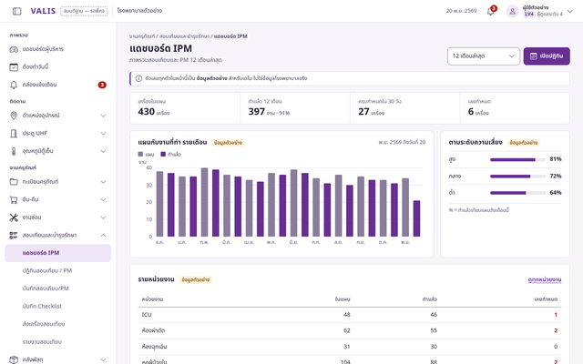
แดชบอร์ด IPM
06-1 แดชบอร์ด IPM · สถานะปกติ
แดชบอร์ดสอบเทียบและบำรุงรักษา 12 เดือน แผนเทียบงานที่ทำ แยกตามระดับความเสี่ยง
เปิดหน้า 7 - 8
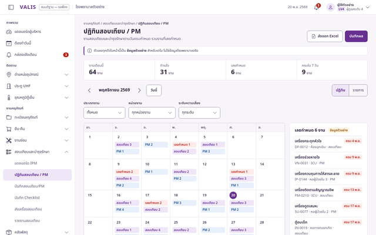
ปฏิทินสอบเทียบ / PM
06-2 ปฏิทินสอบเทียบ / PM · สถานะปกติ
ปฏิทินงานสอบเทียบและ PM เห็นงานรายวันและงานเลยกำหนด
เปิดหน้า 8 - 9
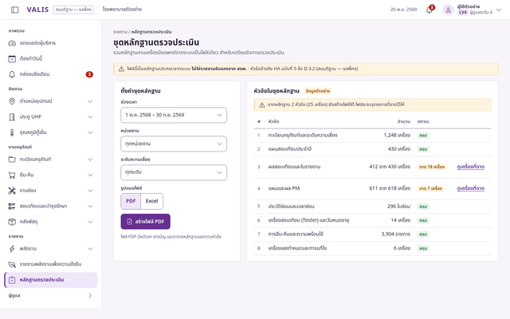
ชุดหลักฐาน HA
06-7 ชุดหลักฐานตรวจประเมิน · สถานะปกติ
ชุดหลักฐานสำหรับตรวจประเมิน HA รวมเอกสารเครื่องมือแพทย์ในที่เดียว
เปิดหน้า 9
พลังงานและ ESGหน้า 10–11
- 10
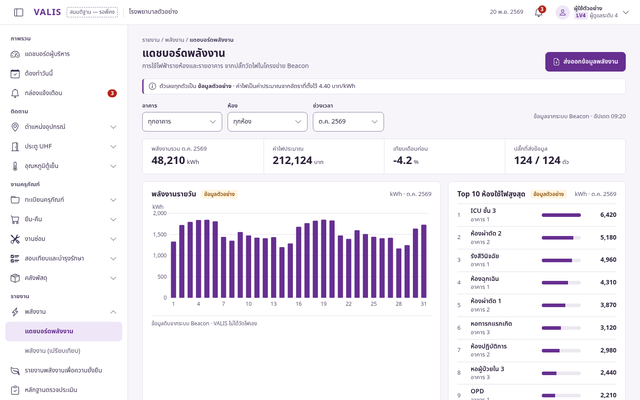
แดชบอร์ดพลังงาน
08-1 แดชบอร์ดพลังงาน + Top 10 ห้อง · สถานะปกติ
การใช้พลังงานของเครื่องมือแพทย์ เป็นหน่วยไฟและค่าไฟโดยประมาณ
เปิดหน้า 10 - 11
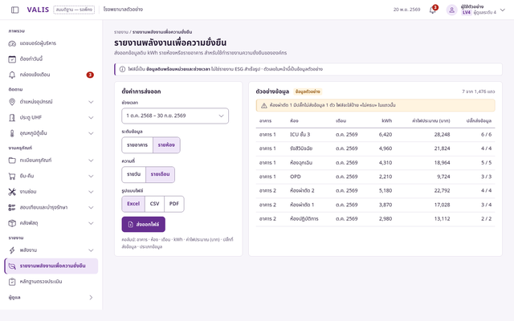
รายงาน ESG
08-3 รายงานพลังงานสำหรับความยั่งยืน · สถานะปกติ
ส่งออกข้อมูลพลังงานสำหรับรายงานความยั่งยืน (ESG)
เปิดหน้า 11
อุณหภูมิตู้เย็นหน้า 12–15
- 12
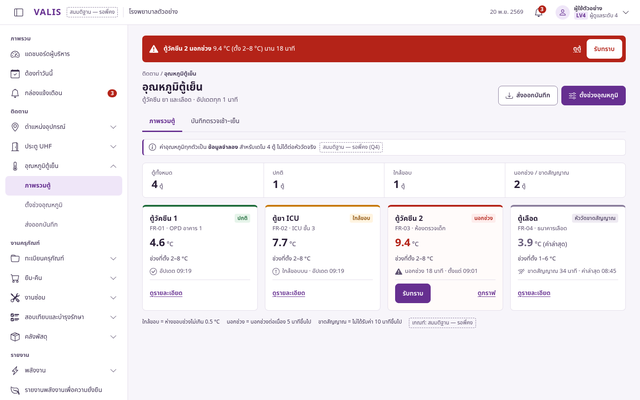
ตู้เย็นนอกช่วง
10-1 ภาพรวมตู้ทั้งหมด · สถานะปกติ
ภาพรวมตู้เย็น 4 ตู้ มีแถบเตือนแดงเมื่อตู้วัคซีนอุณหภูมิเกินช่วง
เปิดหน้า 12 - 13
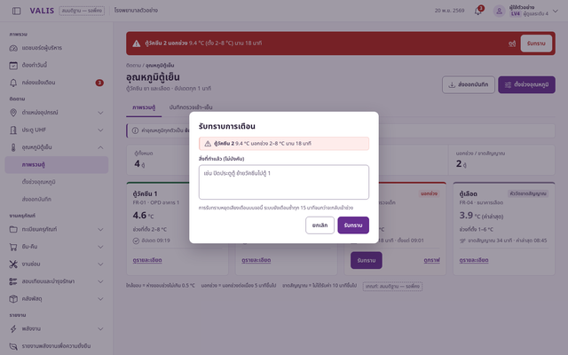
รับทราบการเตือน
10-4 แจ้งเตือนนอกช่วง + รับทราบ · สถานะปกติ
กล่องรับทราบการเตือน บันทึกว่าใครรับทราบและทำอะไรไปแล้ว
เปิดหน้า 13 - 14
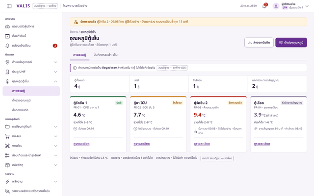
หลังรับทราบ
10-1 ภาพรวมตู้ทั้งหมด · สถานะรับทราบแล้ว
หลังรับทราบ แถบเตือนเปลี่ยนเป็นสถานะรับทราบแล้ว พร้อมเวลาและชื่อผู้รับทราบ
เปิดหน้า 14 - 15
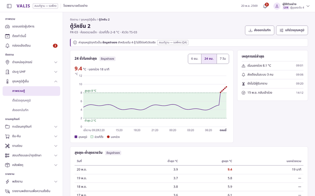
กราฟอุณหภูมิ 24 ชม.
10-2 รายละเอียดตู้: กราฟ 24 ชม. + สูงสุด–ต่ำสุดรายวัน · สถานะปกติ
กราฟอุณหภูมิ 24 ชั่วโมงของตู้ เห็นช่วงที่ตั้งไว้และจุดที่เกินช่วง
เปิดหน้า 15
ประตู แผนผัง ทะเบียนหน้า 16–19
- 16
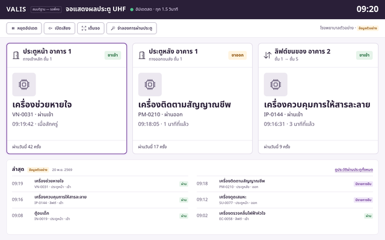
จอประตู UHF
02-1 จอแสดงผลประตู · สถานะปกติ
จอประตู UHF สำหรับเปิดบนจอใหญ่ ตัวอักษรใหญ่ อ่านได้จากระยะไกล
เปิดหน้า 16 - 17
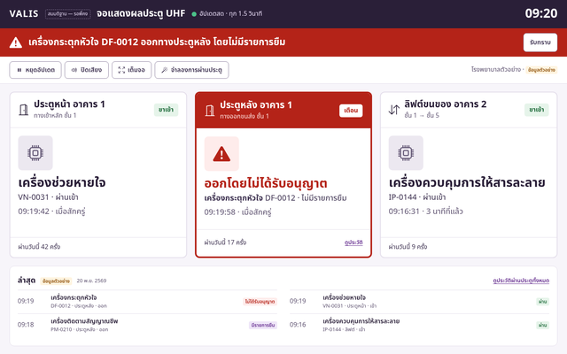
ออกโดยไม่ได้รับอนุญาต
02-1 จอแสดงผลประตู · สถานะออกโดยไม่ได้รับอนุญาต
จอประตูตอนเครื่องออกโดยไม่ได้รับอนุญาต เตือนแดงเต็มจอ
เปิดหน้า 17 - 18
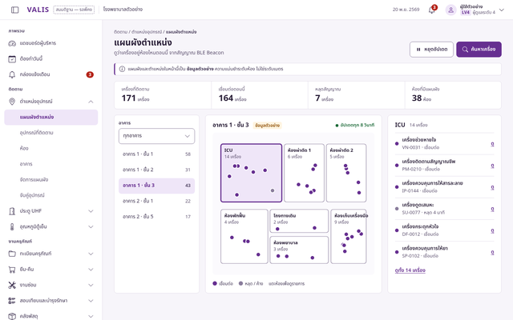
แผนผังตำแหน่ง
01-1 แผนผังตำแหน่ง · สถานะปกติ
แผนผังชั้น แสดงว่าเครื่องแต่ละเครื่องอยู่ห้องไหน
เปิดหน้า 18 - 19
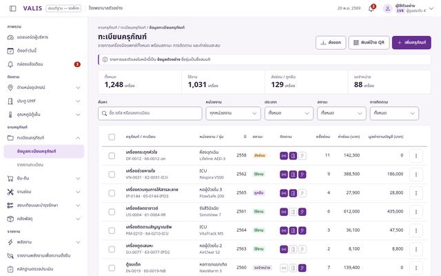
ทะเบียนครุภัณฑ์
04-1 ข้อมูลทะเบียนครุภัณฑ์ · สถานะปกติ
ทะเบียนครุภัณฑ์ เห็นว่าเครื่องไหนติดป้าย BLE, UHF หรือปลั๊กวัดไฟ และพิมพ์ป้าย QR ได้หลายเครื่องพร้อมกัน
เปิดหน้า 19
หน้าที่ปรับหน้าตาหน้า 20–24
- 20
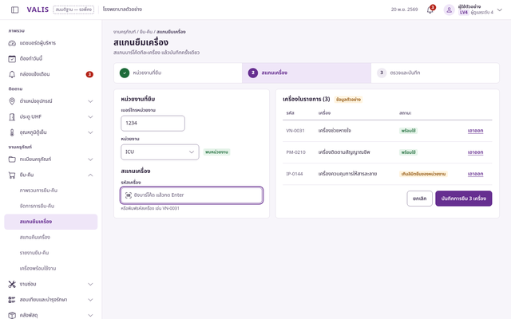
สแกนยืมเครื่อง
03-3 สแกนยืมเครื่อง (3 ขั้น) · สถานะปกติ
สแกนยืมเครื่อง 3 ขั้น หน้าเดิมที่ปรับให้เข้ากับหน้าตาใหม่
เปิดหน้า 20 - 21
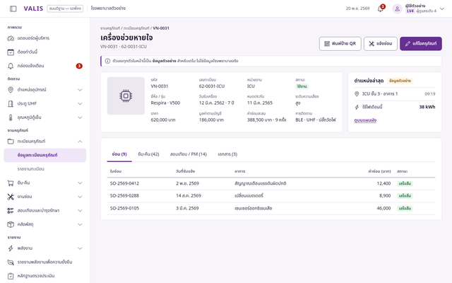
รายละเอียดครุภัณฑ์
04-2 รายละเอียดครุภัณฑ์ · สถานะปกติ
รายละเอียดเครื่อง รวมค่าซ่อมสะสม ประวัติ และตำแหน่งล่าสุด
เปิดหน้า 21 - 22
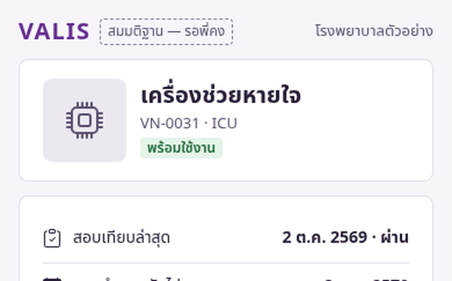
สแกน QR บนมือถือ
04-5 หน้าสแกน QR สาธารณะ · สถานะปกติ · ดูที่จอ 390
หน้าที่เปิดเมื่อสแกน QR บนตัวเครื่องด้วยมือถือ ไม่ต้องเข้าสู่ระบบ
เปิดหน้า 22 - 23
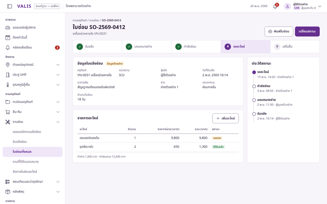
ไทม์ไลน์งานซ่อม
05-6 ไทม์ไลน์งานซ่อม · สถานะปกติ
ไทม์ไลน์งานซ่อม เห็นว่างานซ่อมอยู่ขั้นไหนและใช้อะไหล่อะไร
เปิดหน้า 23 - 24
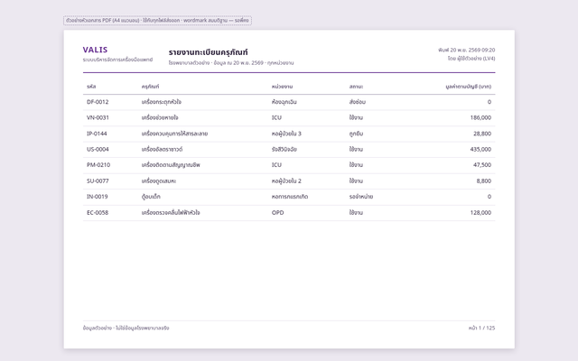
หัวเอกสาร PDF
C-04 หัวเอกสารพิมพ์และไฟล์ส่งออก · สถานะปกติ
ตัวอย่างหัวเอกสาร PDF ที่ส่งออก มีชื่อระบบ ชื่อรายงาน วันที่ และเลขหน้า
เปิดหน้า 24